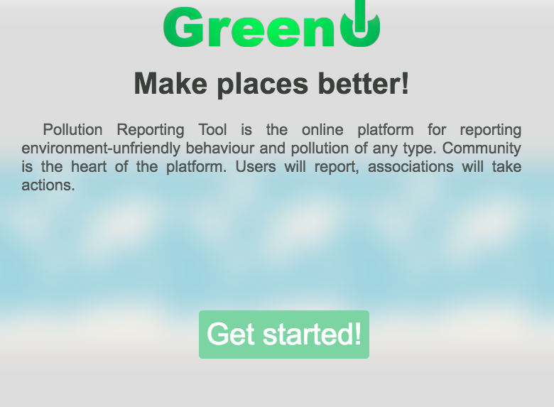
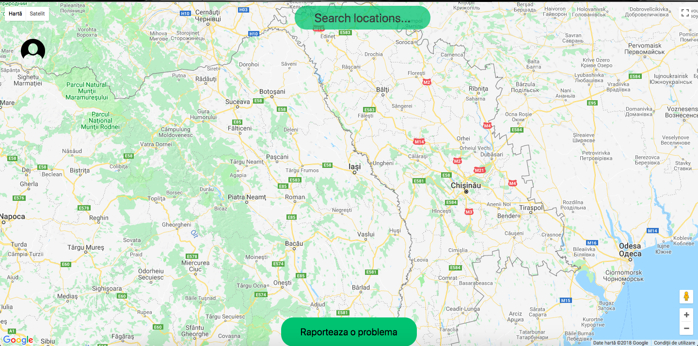
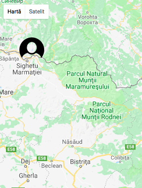
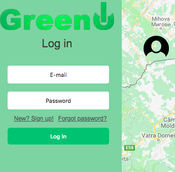
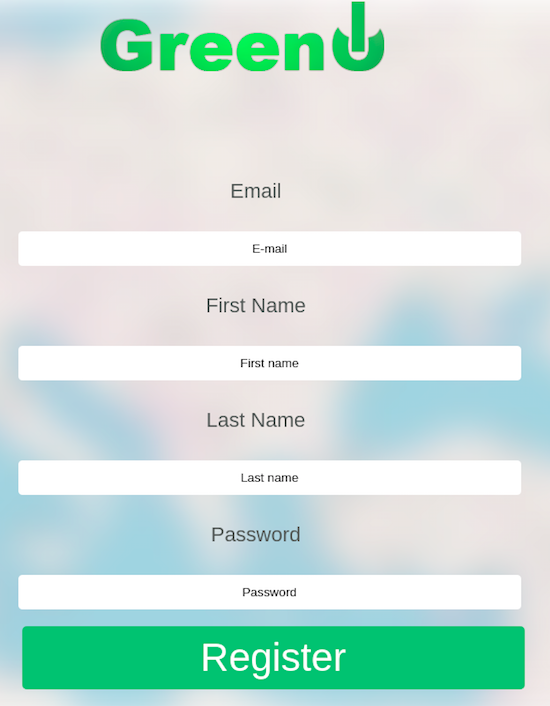
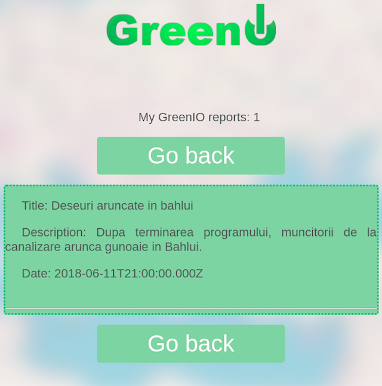
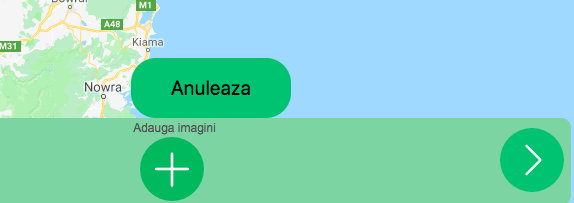
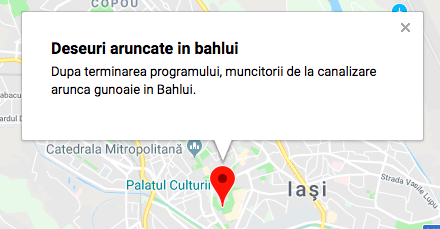
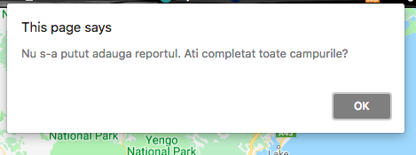

Pollution Reporting Tool is the online platform for reporting environment-unfriendly behaviour and pollution of any type. Community is the heart of the platform. Users will report, associations will take actions.
This page serves as an online guide for our platform, including all steps from registration to reporting an event. Let's begin:
When you first open the website, a welcome page will appear, presenting basic functionalities of our platform.
Here you can click the "Get started" button which appears both at the beggining and the end of the page. Afterwards, you will see the main interface.
Besides others, you will see the button to add a report. You can walk through the steps, however you first have to login in order to successfully do that. Lets do that.
To the left, you will see an user icon which will display the log in menu
 Now you can enter your credentials or click the "New? Sign up!" Button to register.
Once you complete the form, you will be redirected to the main page and you can follow the above steps to log in.
Here you can see the options an user has once logged in the website. You can generate CSV/PDF reports of all the reports in our system, or even see them in the platform in a html page.
You have the options to see both your and global status of reports, but before that, let's add a new report. On the main page, at the bottom, you will see a button for adding reports
Once clicked, you will be prompted to insert a title and a description for the report. Afterwards we can click the next arrow
In this form we can insert images related to our current report. Users will then be able to see these images attached to your report
If all went well, you will see your report on the map
Otherwise, this error message will pop up, telling you what's preventing the report from being added.